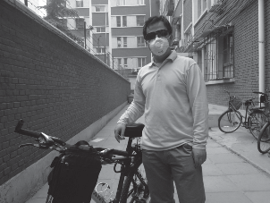
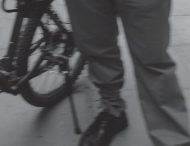
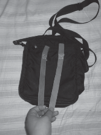
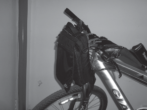

骑了几天自行车，屁股已经渐渐适应了，目前只有腿还不太适应。
今天早上，让小崽子给我照几张最新的英姿照，她满眼的不忿与不愿，说我： “会影响她的时间，再说那么难看有什么可照的，不要臭显摆了”。最后，我许了个好处，才勉强给我照了两张。她从来都不会说别人好看的，也不会在别人兴头上说几句好听的话。
照片说明：照片中右腿临时用松紧带绑上了，以后会换成专用绑带，自行车加装了货架子，并换了一个短 4厘米的把立，这样会使骑行姿势更舒服些。这两张照片由于小崽子的心不在焉和火急火燎，请大家忽略掉一些和我的英姿不协调的部分，大家按照我上述说明在脑海中重新想象一下我的英姿，就会更加贴近真实的我了。
骑自行车没有个小包，太不方便，裤子兜鼓鼓的不好看，背电脑包太重也加重了屁股的负担。在家翻了半天，发现了一个 10 年前的一个阿迪达斯小包，大小合适，就是拉链坏了，背了两天还是不爽，包总是在后背和肚子前来回乱跑，影响骑车的平衡。还是改造一下它吧，再让它焕发当年的青春。说干就干，到地摊儿换了个拉链，找了 2 根联想笔记本电脑电源上的系带，让老妈给缝在了包的后面。就这么简单，
大功告成！我的 DIY 车前包就 OK 了，大家来欣赏一下。
胡有理同志是时常有理、经常有理、永远有理，她就没有无理的时候！我刚刚提出我的想法后，她只有一句话：“真是没劲，买现成的算了”。该同志在教育小孩的时候，那是经常教育她：“要锻炼动手能力、要有创新、要自己做自己的事”。不过，在面对我的时候，该同志又是经常批评我的创新与自己动手，认为我总是在细枝末节上消耗太多的精力和时间，也同时捎带着会批评我的许多传统美德，包括艰苦朴素、勤俭节约等，大谈什么开源不节流。
不管那么多了，道理是总在改变，与时俱进，不能较真儿的；人也到处是牛人、狂人（小孩的同学家长 QQ 群上也有大量的女牛、女狂们）。还是享受咱自己创新的乐趣吧。
